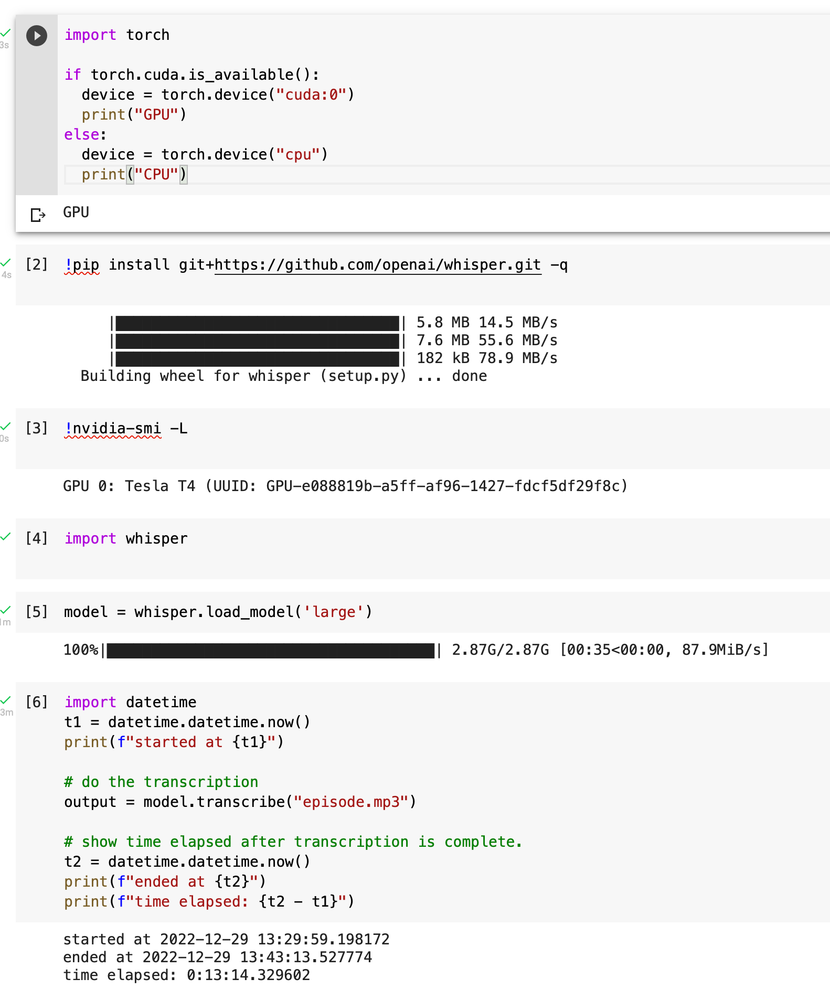
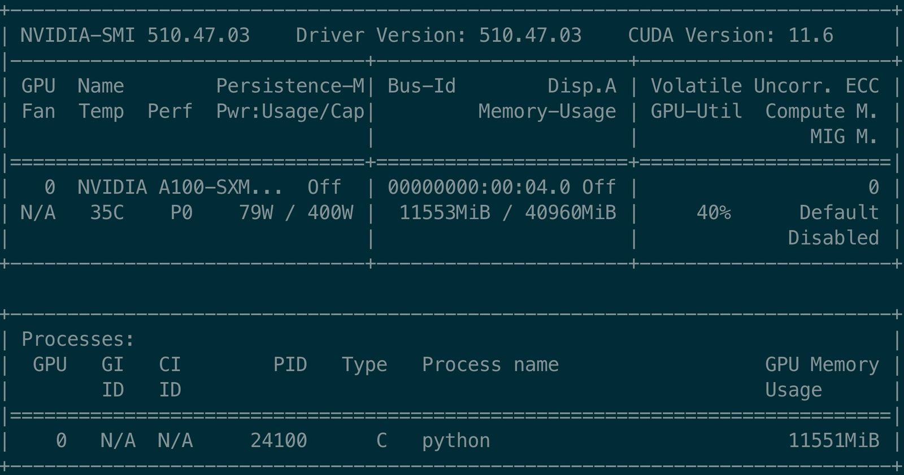

OpenAI Whisper Benchmark Nvidia Tesla T4 / A100
In my previous article, I wondered how OpenAI Whisper C++ Edition on a MacBook Pro M1Pro stacks up against a CUDA card. I don’t have one, so I could not do the test.
Benchmarking Nvidia Tesla T4
Google Colab to the rescue. I totally forgot about it. I can run (for free) on an Nvidia T4. If you start a notebook for yourself, don’t forget to set the Runtime to GPU.
To really check the speed on these, I used a longer audio file of 2:01h.

For 7250 seconds of audio the T4 needed 794 seconds to transcribe, a 9.2 x speed increase. A smaller file just had a 3.2 x.
Benchmarking Nvidia Tesla A100
Taking this a notch up, I went ahead to Google Cloud and got an Nvidia Tesla A100 40 GB GPU instance with an CUDA 11.3 M102 and pytorch 1.12 image.
This is the little script I used to measure.
import whisper
import torch
import json
import datetime
if torch.cuda.is_available():
device = torch.device("cuda:0")
print("GPU")
print(torch.cuda.current_device())
print(torch.cuda.device(0))
print(torch.cuda.get_device_name(0))
else:
device = torch.device("cpu")
print("CPU")
t0 = datetime.datetime.now()
print(f"Load Model at {t0}")
model = whisper.load_model('large')
t1 = datetime.datetime.now()
print(f"Loading took {t1-t0}")
print(f"started at {t1}")
# do the transcription
output = model.transcribe("audio.mp3")
# show time elapsed after transcription is complete.
t2 = datetime.datetime.now()
print(f"ended at {t2}")
print(f"time elapsed: {t2 - t1}")
with open("transcription.json", "w") as f:
f.write(json.dumps(output))
For the same audio, it took 710 seconds. Not that much faster, ‘just’ 10.2 x.
GPU
0
<torch.cuda.device object at 0x7fcacbd5d6d0>
NVIDIA A100-SXM4-40GB
Load Model at 2022-12-29 15:43:59.387223
Loading took 0:00:26.258414
started at 2022-12-29 15:44:25.645637
ended at 2022-12-29 15:56:16.130757
time elapsed: 0:11:50.485120
Looking at nvidia-smi tells me:

The CPU is just utilized by 40%! No idea why.
Not sure if there are A100 and T4 model revision with different specs. A Tesla T4 has 65 FP16 TFLOPS. A Tesla A100 has up to 312/624 FP16 TFLOPS. So roughly 5x or 10x the speed. So extrapolation of FP16 TFLOPS does not help. It does not explain the ‘slow’ transcription. Running two processes on the card might work and somehow doubles the throughput.
I would run the test in a shell on a T4 again, but it is very hard (impossible) to find an available T4 instance in any Google Cloud region. Go to the cloud, they said, it has endless resources. Not.
Running on Graphics card?
If I ran this on a Graphics card, what would I need? Judging from the unreliable TFLOPS numbers any card with > 65 TFLOPS and >=12GB RAM would be good. A RTX 4090 (almost same spec as A100, with 330/660 TFLOPS FP16) running two processes could be nice, 2*11.5 GB should fit into the VRAM and should have comparable Performance (but much more Power usage). If I get my hands on CUDA Graphics card (maybe not an expensive 4090), I will try this. Thankfully, I just had a solar roof installed.
I’m new to all of that, so this all might make no sense. By writing it down, I try to get my head sorted :).
Lots of more fun ahead.
Update: Checkout my comparison 4090 vs M1Pro with the MLX Framework